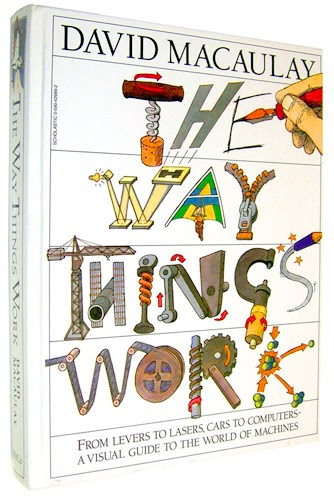

Robert Carter Mills
coder, engineer, linguist, artist
I love programming, conceptual design, languages, and aesthetics. I derive a deep sense of satisfaction from the process of learning, creating, and implementing efficient software solutions, manipulating data to be more palatable, and crafting elegant, extensible, intuitive interfaces.
Having been a fast-paced FPS PC gamer most of my life, I have a particular passion for optimizing code and low latency. My highly tuned gaming configs made extensive use of key-bindings, which translated nicely to Vim-style modal editing. I use Sublime Text Vintage mode fluently, along with macros and scripts to quickly and productively manipulate code.
In terms of the Myers Briggs personality types I am INTP:
Introverted iNtuitive Thinking Perceptive
"INTP's seek to develop logical explanations for everything that interests them. Theoretical and abstract, interested more in ideas than in social interaction. Quiet, contained, flexible, and adaptable. They have an unusual ability to focus in depth to solve problems in their area of interest. Skeptical, sometimes critical, always analytical."
My favorite book as a child was The Way Things Work by David Macaulay, and my favorite toy was my latest Legos set. I think that pretty much sums up my strongest personality trait. I love learning about and understanding the world around me, and then using that knowledge to build things.
I would say I also have a strong artistic / creative streak with a deep appreciation for efficiency and organization of form, function and design. The aesthetic I strive for is a minimal, simple, elegant and polished form that unfolds complexity and power. In a word:
shibusa (渋さ)"A Japanese word which refers to a particular aesthetic of simple, subtle, and unobtrusive beauty. Shibusa objects appear to be simple overall but they include subtle details, such as textures, that balance simplicity with complexity. This balance ensures that one does not tire of a shibusa object but constantly finds new meaning and enriched beauty that cause its aesthetic value to grow over the years...
Shibusa walks a fine line between contrasting aesthetic concepts such as elegant and rough or spontaneous and restrained."